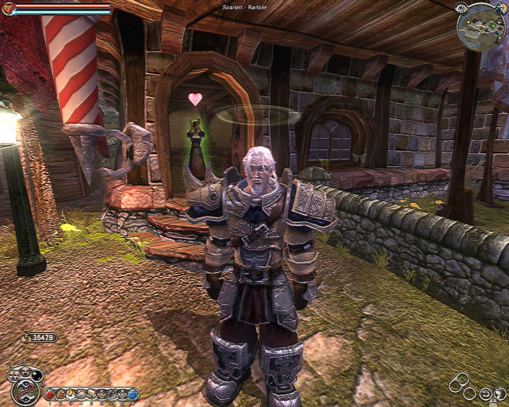
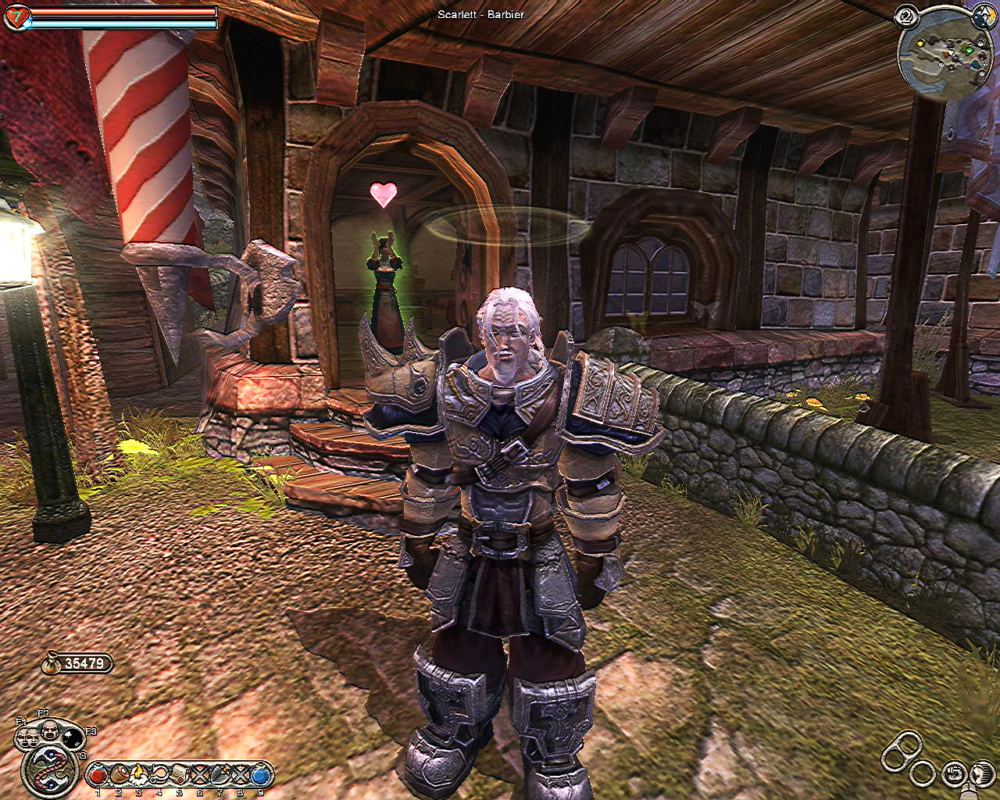
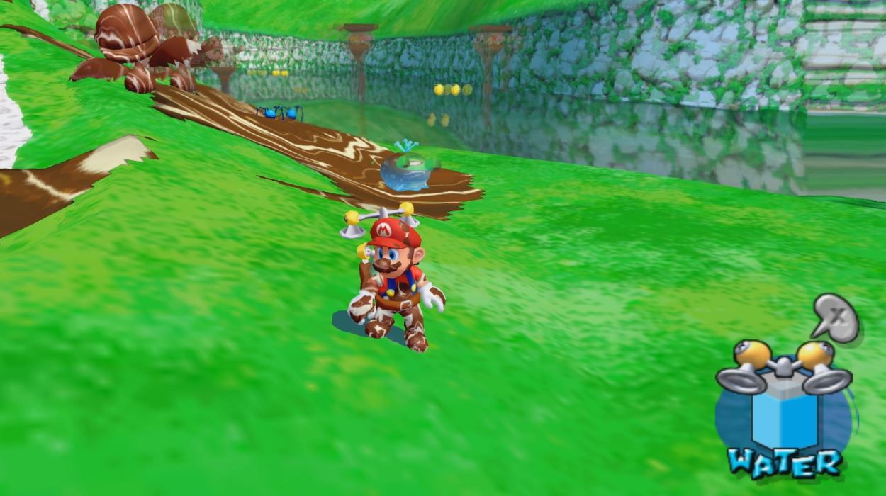
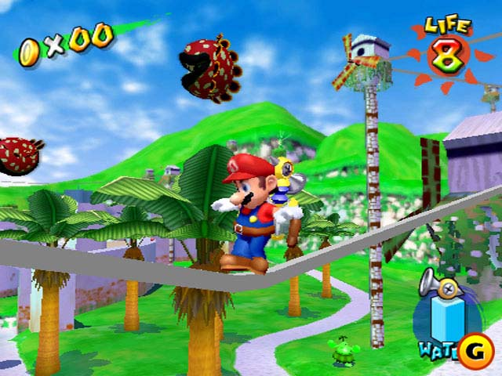
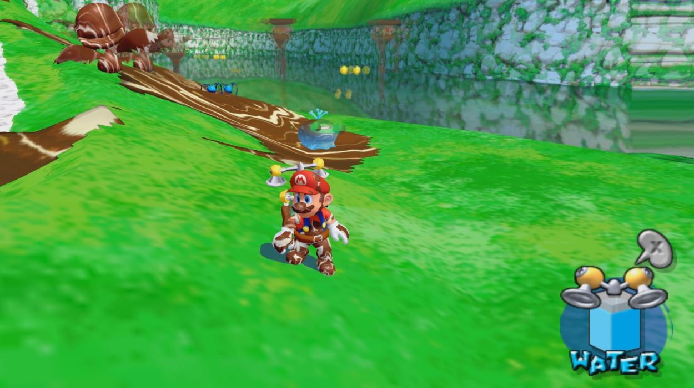
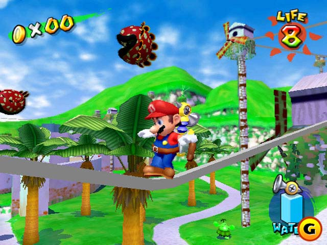
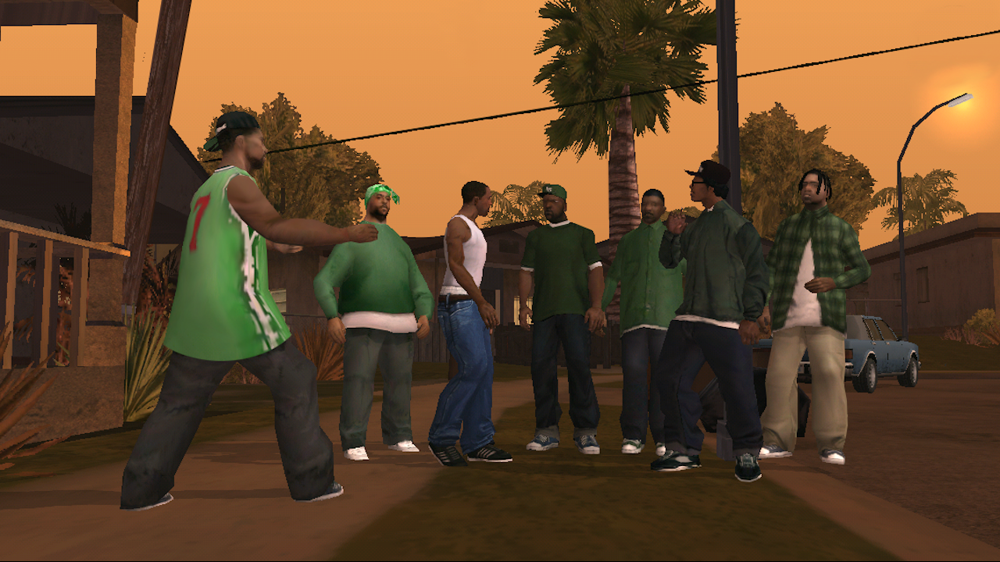
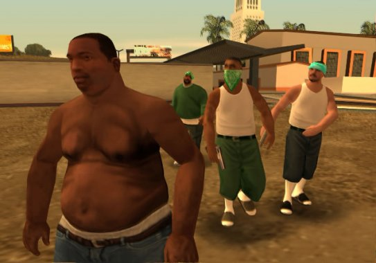
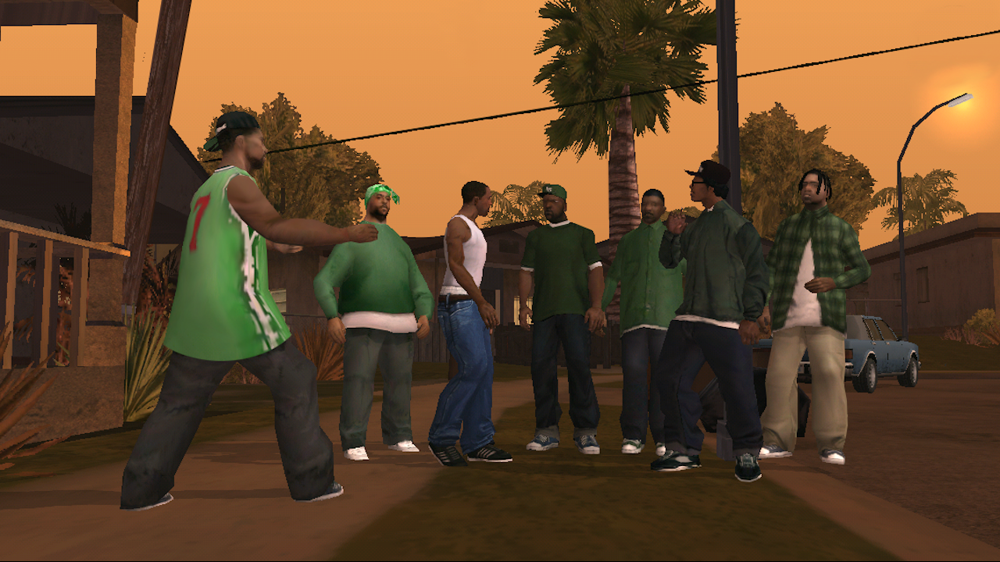
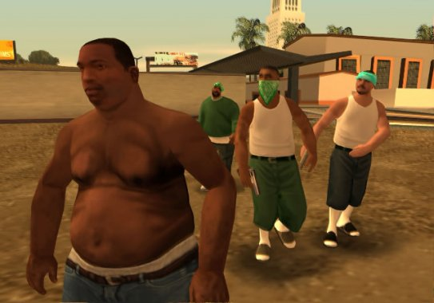

6. Fable

 

Fable was like no other game I played. It was short but the replay value was
high. At that time, I always thought the longer the game is, the more impressive.
This game taught me that there is beauty is a short story.
The level
of detail & possibilities in this game was incredible. You could get
married, grow old, be evil, and get scarrs in battles. I found a new appreciation
for detail in video games thanks to this game.
 



 


